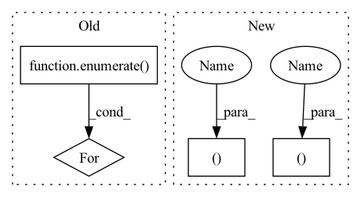

Pattern ID :3159
Before Change
img_size = x.shape[-2:] // height, width
s = [0.83, 0.67] // scales
y = []
for i, xi in enumerate( (x,
torch_utils.scale_img(x.flip(3), s[0]), // flip-lr and scale
torch_utils.scale_img(x, s[1]), // scale
)):
// cv2.imwrite("img%g.jpg" % i, 255 * xi[0].numpy().transpose((1, 2, 0))[:, :, ::-1])
y.append(self.forward_once(xi)[0])
y[1][..., :4] /= s[0] // scale
y[1][..., 0] = img_size[1] - y[1][..., 0] // flip lrAfter Change
// cv2.imwrite("img%g.jpg" % s, 255 * xi[0].numpy().transpose((1, 2, 0))[:, :, ::-1]) // save
yi[..., :4] /= si // de-scale
if fi is 2:
yi[... , 1 ] = img_size[0] - yi[... , 1 ] // de-flip ud
elif fi is 3:
yi[..., 0] = img_size[1] - yi[..., 0] // de-flip lr
y.append(yi)In pattern: SUPERPATTERN
Frequency: 7
Non-data size: 4
Instances Fragment ID: 16871712
Project Name: wmcnally/kapao
Commit Name: 1d17b9af0f68ee97f9edc5f10fea51e9af9ef14e
Time: 2020-07-24
Author: glenn.jocher@ultralytics.com
File Name: models/yolo.py
M Class Name: Model
N Class Name: Model
M Method Name: forward(4)
N Method Name: forward(4)
M Parent Class: nn.Module
N Parent Class: nn.Module
M File Name: models/yolo.py
N File Name: models/yolo.py
M Start Line: 85
M End Line: 96
N Start Line: 84
N End Line: 98
Before Change
if input_mask is None:
input_mask = torch.full_like(x, True, device=device, dtype=torch.bool)
for ind, x in enumerate( args):
x, padding = pad_to_multiple(x, self.pad_multiple, dim=self.pad_dim)
args[ind] = x
if padding != 0:After Change
def forward(self, *args, **kwargs):
q, args = args[0], list(args)
b, h, t, _, device = *q.shape, q.device
input_mask = kwargs.get("input_mask")
if input_mask is None:
input_mask = torch.full((b, t ), True, device=device, dtype=torch.bool)
args = map(lambda t: pad_to_multiple(t, self.pad_multiple, dim=-2), args)
new_mask = pad_to_multiple(input_mask, self.pad_multiple, dim=-1, value=False) Fragment ID: 16871715
Project Name: lucidrains/routing-transformer
Commit Name: f93f7a6b829422e259a3e439f1bf0baa7abc2e30
Time: 2020-05-27
Author: lucidrains@gmail.com
File Name: routing_transformer/autopadder.py
M Class Name: Autopadder
N Class Name: Autopadder
M Method Name: forward(1)
N Method Name: forward(1)
M Parent Class: nn.Module
N Parent Class: nn.Module
M File Name: routing_transformer/autopadder.py
N File Name: routing_transformer/autopadder.py
M Start Line: 25
M End Line: 43
N Start Line: 24
N End Line: 34
Before Change
def forward(self, input, encoder_outs=None):
// im branch
x = input
for i, up_conv in enumerate( self.up_convs):
before_pool = None
if encoder_outs is not None:
before_pool = encoder_outs[-(i+2)]
x = up_conv(x, before_pool,se=self.im_atts[i])
After Change
// Decoder convs
x = x_im
for i, nets in enumerate(zip(self.up_convs, self.up_im_atts)):
up_conv, attn = nets
before_pool = None
if im_encoder_outs is not None:
before_pool = im_encoder_outs[-(i+2)]
x = up_conv(x, before_pool,se=attn)
x_im = x
x = x_mask
for i, nets in enumerate(zip(self.up_convs, self.up_mask_atts)):
up_conv, attn = nets
before_pool = None
if mask_encoder_outs is not None:
before_pool = mask_encoder_outs[-(i+2)]
Fragment ID: 16871701
Project Name: bcmi/slbr-visible-watermark-removal
Commit Name: 43e84b70895d28955496122816e50857863e5bfd
Time: 2022-01-04
Author: lj200820082007@163.com
File Name: src/networks/resunet.py
M Class Name: SharedDecoder
N Class Name: SharedBottleNeck
M Method Name: forward(2)
N Method Name: forward(3)
M Parent Class: nn.Module
N Parent Class: nn.Module
M File Name: src/networks/resunet.py
N File Name: src/networks/resunet.py
M Start Line: 86
M End Line: 112
N Start Line: 84
N End Line: 114
Before Change
img_size = x.shape[-2:] // height, width
s = [0.83, 0.67] // scales
y = []
for i, xi in enumerate( (x,
torch_utils.scale_img(x.flip(3), s[0]), // flip-lr and scale
torch_utils.scale_img(x, s[1]), // scale
)):
// cv2.imwrite("img%g.jpg" % i, 255 * xi[0].numpy().transpose((1, 2, 0))[:, :, ::-1])
y.append(self.forward_once(xi)[0])
y[1][..., :4] /= s[0] // scale
y[1][..., 0] = img_size[1] - y[1][..., 0] // flip lrAfter Change
// cv2.imwrite("img%g.jpg" % s, 255 * xi[0].numpy().transpose((1, 2, 0))[:, :, ::-1]) // save
yi[..., :4] /= si // de-scale
if fi is 2:
yi[..., 1 ] = img_size[0] - yi[..., 1 ] // de-flip ud
elif fi is 3:
yi[..., 0] = img_size[1] - yi[..., 0] // de-flip lr
y.append(yi) Fragment ID: 16871719
Project Name: positive666/yolov5_research
Commit Name: 1d17b9af0f68ee97f9edc5f10fea51e9af9ef14e
Time: 2020-07-24
Author: glenn.jocher@ultralytics.com
File Name: models/yolo.py
M Class Name: Model
N Class Name: Model
M Method Name: forward(4)
N Method Name: forward(4)
M Parent Class: nn.Module
N Parent Class: nn.Module
M File Name: models/yolo.py
N File Name: models/yolo.py
M Start Line: 85
M End Line: 96
N Start Line: 84
N End Line: 98
Before Change
count = np.arange(x.shape[0]) + 1
self.c_t = torch.zeros_like(self.emb) // shape=(seq_len, batch_size, day_dim)
for i, att_timesteps in enumerate( count):
// 按时间步迭代，计算每个时间步的经attention的gru输出
self.c_t[i] = self.attentionStep(first_h_a, first_h_b, att_timesteps)
if self.drop < 1.0:
self.c_t = self.dropout(self.c_t)After Change
return out
def forward(self, x):
batch_size, time_steps, _ = x.size()
x = self.proj(x)
x = self.dropout(x)
out = torch.zeros((batch_size, time_steps, self.hidden_dim ))
for cur_time in range(time_steps):
cur_x = x[:, : cur_time + 1, :] Fragment ID: 16871723
Project Name: yhzhu99/covid-ehr-benchmarks
Commit Name: b3d4ba85ad8e8cfeb3e45e07e5fadfa3fd4a25fa
Time: 2022-06-25
Author: yhzhu99@gmail.com
File Name: app/models/backbones/retain.py
M Class Name: RETAIN
N Class Name: RETAIN
M Method Name: forward(2)
N Method Name: forward(2)
M Parent Class: nn.Module
N Parent Class: nn.Module
M File Name: app/models/backbones/retain.py
N File Name: app/models/backbones/retain.py
M Start Line: 64
M End Line: 83
N Start Line: 44
N End Line: 53